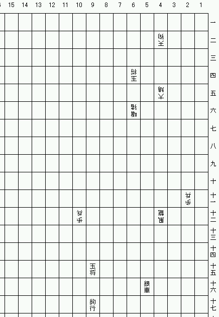

大局詰将棋 No.2
大局将棋の詰将棋です。成駒はありません。
この作品は不完全作でした。ただいま修正図を検討中です。

- 手数：3手詰
- 作者：関 勝寿
- 正解手順と解説
- 作成日：2003年12月13日 (履歴)
- 解答募集締切：2004年1月12日(月)
- 正解者：もずさん, 4RKYTさん, 先手＠５人目さん
駒の動き
大局将棋の駒の動きの中から、この作品に使われている駒の動きを一覧にします。上段から順番に表示しています。
| 記号 | 説明
|
| ３○ | その方向に３歩まで進めるが、間の駒を飛び越えてはいけない
|
| │／ | その方向にいくらでも進める（走る）
|
天狗
┌─┬─┬─┬─┬─┐
│＼│／│ │＼│／│角の動きを２回出来る。
├─×─┼─┼─×─┤ただし２回の動きで駒を２個取る事は出来ない。
│／│＼│ │／│＼│駒を取ったらそこで止まる。
├─┼─┼─┼─┼─┤
│ │ │▲│ │ │⇒×
├─┼─┼─┼─┼─┤
│＼│／│ │＼│／│
├─×─┼─┼─×─┤
│／│＼│ │／│＼│
└─┴─┴─┴─┴─┘
玉将
┌─┬─┬─┬─┬─┐
│○│ │○│ │○│普通の将棋の玉将と動きが違うので注意
├─┼─┼─┼─┼─┤
│ │○│○│○│ │
├─┼─┼─┼─┼─┤
│○│○│▲│○│○│⇒×（成らず）
├─┼─┼─┼─┼─┤
│ │○│○│○│ │
├─┼─┼─┼─┼─┤
│○│ │○│ │○│
└─┴─┴─┴─┴─┘
大鳩 鳩槃
┌─┬─┬─┬─┬─┐
│＼│ │○│ │／│
├─┼─┼─┼─┼─┤
│ │＼│３ │／│ │
├─┼─┼─┼─┼─┤
│○│３ │▲│３ │○│⇒上の方の鳩槃参照
├─┼─┼─┼─┼─┤
│ │／│３ │＼│ │
├─┼─┼─┼─┼─┤
│／│ │○│ │＼│
└─┴─┴─┴─┴─┘
嗔猪 奔猪
┌─┬─┬─┬─┬─┐ ┌─┬─┬─┬─┬─┐
│ │ │ │ │ │ │＼│ │││ │／│
├─┼─┼─┼─┼─┤ ├─┼─┼─┼─┼─┤
│ │○│ │○│ │ │ │＼│││／│ │
├─┼─┼─┼─┼─┤ ├─┼─┼─┼─┼─┤
│ │○│▲│○│ │⇒│─│─│▲│─│─│
├─┼─┼─┼─┼─┤ ├─┼─┼─┼─┼─┤
│ │○│ │○│ │ │ │ │○│ │ │
├─┼─┼─┼─┼─┤ ├─┼─┼─┼─┼─┤
│ │ │ │ │ │ │ │ │ │ │ │
└─┴─┴─┴─┴─┘ └─┴─┴─┴─┴─┘
歩兵 と金
┌─┬─┬─┬─┬─┐ ┌─┬─┬─┬─┬─┐
│ │ │ │ │ │ │ │ │ │ │ │
├─┼─┼─┼─┼─┤ ├─┼─┼─┼─┼─┤
│ │ │○│ │ │ │ │○│○│○│ │
├─┼─┼─┼─┼─┤ ├─┼─┼─┼─┼─┤
│ │ │▲│ │ │⇒│ │○│▲│○│ │
├─┼─┼─┼─┼─┤ ├─┼─┼─┼─┼─┤
│ │ │ │ │ │ │ │ │○│ │ │
├─┼─┼─┼─┼─┤ ├─┼─┼─┼─┼─┤
│ │ │ │ │ │ │ │ │ │ │ │
└─┴─┴─┴─┴─┘ └─┴─┴─┴─┴─┘
風龍 奔龍
┌─┬─┬─┬─┬─┐ ┌─┬─┬─┬─┬─┐
│＼│ │ │ │／│ │＼│ │ │ │／│
├─┼─┼─┼─┼─┤ ├─┼─┼─┼─┼─┤
│ │＼│ │／│ │ │ │＼│ │／│ │
├─┼─┼─┼─┼─┤ ├─┼─┼─┼─┼─┤
│─│─│▲│─│─│⇒│─│─│▲│─│─│
├─┼─┼─┼─┼─┤ ├─┼─┼─┼─┼─┤
│ │○│ │＼│ │ │ │／│││＼│ │
├─┼─┼─┼─┼─┤ ├─┼─┼─┼─┼─┤
│ │ │ │ │＼│ │／│ │││ │＼│
└─┴─┴─┴─┴─┘ └─┴─┴─┴─┴─┘
銀車 鴻翼
┌─┬─┬─┬─┬─┐ ┌─┬─┬─┬─┬─┐
│○│ │││ │○│ │ │ │││ │ │
├─┼─┼─┼─┼─┤ ├─┼─┼─┼─┼─┤
│ │○│││○│ │ │ │○│││○│ │
├─┼─┼─┼─┼─┤ ├─┼─┼─┼─┼─┤
│ │ │▲│ │ │⇒│○│３ │▲│３ │○│
├─┼─┼─┼─┼─┤ ├─┼─┼─┼─┼─┤
│ │○│││○│ │ │ │○│││○│ │
├─┼─┼─┼─┼─┤ ├─┼─┼─┼─┼─┤
│ │ │││ │ │ │ │ │││ │ │
└─┴─┴─┴─┴─┘ └─┴─┴─┴─┴─┘
鉤行
┌─┬─┬─┬─┬─┐
│ │─┼┼┼─│ │鉤行は飛車の動きを２回出来る
├─┼─┼┼┼─┼─┤ただし２回の動きで駒を２個取る事は出来ない。
│││ │││ │││駒を取ったらそこで止まる。
├┼┼─┼─┼─┼┼┤
│┼┼─│▲│─┼┼│⇒×
├┼┼─┼─┼─┼┼┤
│││ │││ │││
├─┼─┼┼┼─┼─┤
│ │─┼┼┼─│ │
└─┴─┴─┴─┴─┘
ルール
- 自陣は１１段目まで。敵陣に入ると成る。
- 駒はチェスのように取り捨て。再利用しない。
- 2003年12月13日
- 発表。
作品一覧に戻る
Copyright (C) 2003 Katsutoshi Seki. All
rights reserved.